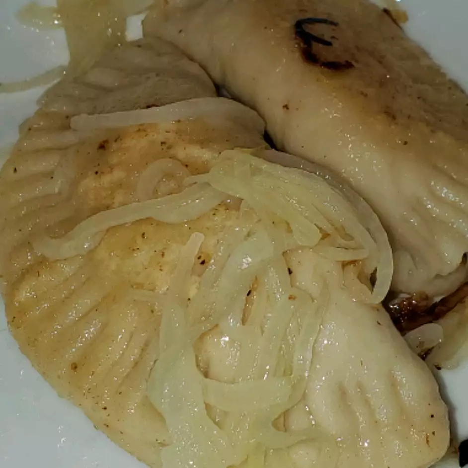

Perogies

Description
Perogies are potato dumplings that can be eaten various ways.
Either right after boiling, or fried with butter.
Serve with sour cream or cottage cheese, and fry with onions or bacon.
Using the bacon grease to fry instead of butter is another great option.
Ingredients
- 2 cups all-purpose flour
- 1 teaspoon salt
- 1 egg, beaten
- 2/3 cup of cold water
- 1 pound of bacon
- 5 pounds baking potatos
- 1 cup shredded Cheddar cheese
- salt and pepper to taste
- 1 (32 ounce) jar sauerkraut; drained, rinsed, and minced
Steps
- To Make Dough:
- In a medium bowl combine flour, salt, egg, and water.
- Mix all ingredients together to form dough; cover bowl and set aside
- To Make Potato Filling:
- Place potatoes in large pot, add water to cover and bring to a boil. Boil for 25-35 minutes until tender. Remove potatoes from water and mash.
- Place bacon in large, deep skillet and cook on medium-high heat until evenly brown.
- Drain and crumble bacon, then stir into mashed potatoes
- Stir in cheese and season with salt and pepper
- To Make Sauerkraut Filling:
- Place bacon in large, deep skillet and cook over medium-high heat until brown.
- Drain, crumble, and place in a medium-sized bowl.
- Stir in sauerkraut, then sour cream and mix well.
- To Make Perogies:
- Roll reserved dough out on a floured surface.
- Cut out circles of dough using a small round container.
- Place a spoonful of potato or sauerkraut filling in the center of each circle and fold over, pinching edges to seal.
- Bring pot of lightly salted water to a boil; drop perogies in water and cook for 4-5 minutes, or until they float.
- Optional: fry boiled perogies in butter or bacon grease until golden brown.